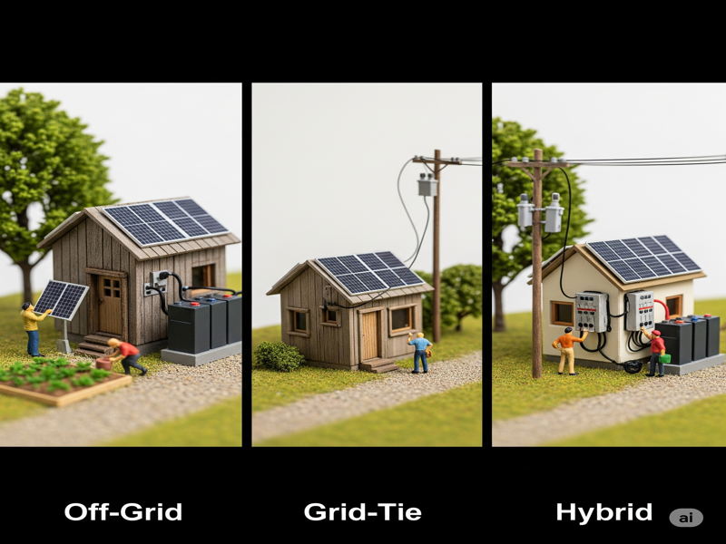
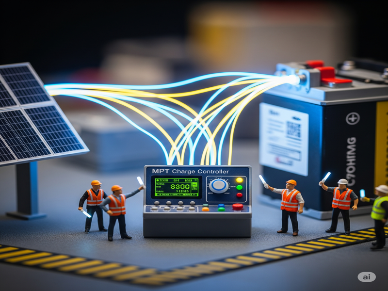
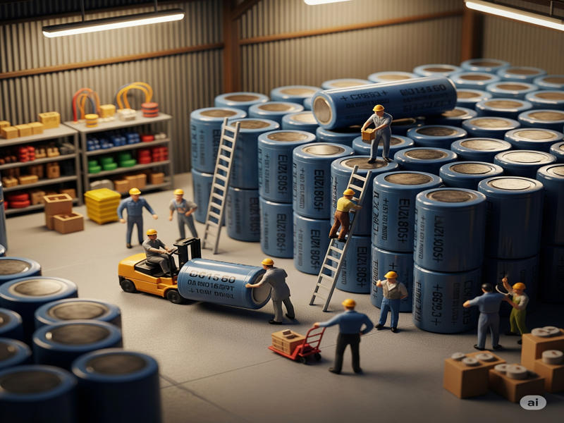
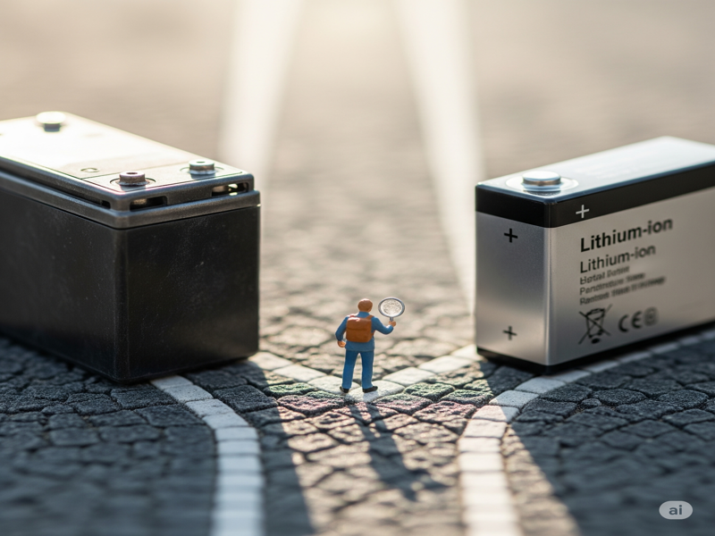

บทที่ 3: ประเภทของระบบและอุปกรณ์หลัก
ระบบโซลาร์เซลล์ไม่ได้มีเพียงแบบเดียว การเลือกระบบที่เหมาะสมกับการใช้งานเป็นสิ่งสำคัญที่สุด มาทำความรู้จักกับ 3 ระบบหลัก และหน้าที่ของอุปกรณ์หัวใจสำคัญในระบบ
3.1 รู้จัก 3 ระบบหลัก: Off-Grid, Grid-Tie, Hybrid
Off-Grid (ระบบออฟกริด หรือ Standalone)
- หลักการ: ไม่เชื่อมต่อกับการไฟฟ้า ผลิตไฟฟ้าใช้เองและเก็บในแบตเตอรี่ 100%
- จุดเด่น: เหมาะสำหรับพื้นที่ที่ไฟฟ้าเข้าไม่ถึง มีไฟฟ้าใช้แม้ไฟดับ
- ข้อควรพิจารณา: ต้องลงทุนกับแบตเตอรี่ซึ่งมีราคาสูงและมีอายุการใช้งานจำกัด, ต้องออกแบบระบบให้ใหญ่พอสำหรับรองรับช่วงที่ไม่มีแดด
Grid-Tie (ระบบออนกริด)
- หลักการ: เชื่อมต่อกับการไฟฟ้า ไม่ต้องมีแบตเตอรี่
- จุดเด่น: ลงทุนต่ำที่สุด (ไม่ต้องซื้อแบตเตอรี่), ช่วยประหยัดค่าไฟในตอนกลางวัน, หากผลิตไฟเกินสามารถขายคืนให้การไฟฟ้าได้ (หากได้รับอนุญาต)
- ข้อควรพิจารณา: เมื่อไฟฟ้าดับ ระบบจะดับไปด้วยเพื่อความปลอดภัย (Anti-islanding)
Hybrid (ระบบไฮบริด)
- หลักการ: เป็นลูกผสมระหว่าง Off-Grid และ Grid-Tie คือมีแบตเตอรี่และเชื่อมต่อกับการไฟฟ้าด้วย
- จุดเด่น: เป็นระบบที่สมบูรณ์แบบที่สุด ช่วยประหยัดค่าไฟในตอนกลางวัน, เก็บไฟไว้ใช้ตอนกลางคืน, และมีไฟสำรองใช้เมื่อไฟดับ
- ข้อควรพิจารณา: มีราคาการลงทุนสูงที่สุด เพราะต้องใช้อินเวอร์เตอร์ชนิดไฮบริดและแบตเตอรี่
3.2 หน้าที่ของ "อินเวอร์เตอร์" (Inverter)
อินเวอร์เตอร์เปรียบเสมือน "สมอง" ของระบบโซลาร์เซลล์ ทำหน้าที่แปลงไฟฟ้ากระแสตรง (DC) จากแผงโซลาร์หรือแบตเตอรี่ ให้เป็นไฟฟ้ากระแสสลับ (AC) 220V เพื่อให้เครื่องใช้ไฟฟ้าในบ้านสามารถใช้งานได้ อินเวอร์เตอร์มีหลายชนิด เช่น Off-Grid Inverter, Grid-Tie Inverter, และ Hybrid Inverter ซึ่งต้องเลือกให้ตรงกับประเภทของระบบ
3.3 หน้าที่ของ "ชาร์จเจอร์" (Charge Controller)
ชาร์จเจอร์ใช้ในระบบ Off-Grid และ Hybrid เท่านั้น เปรียบเสมือน "ผู้จัดการแบตเตอรี่" ทำหน้าที่ควบคุมการชาร์จไฟฟ้าจากแผงโซลาร์เซลล์ลงสู่แบตเตอรี่ ป้องกันไม่ให้แบตเตอรี่ถูกชาร์จไฟเกิน (Overcharge) หรือคายประจุมากเกินไป (Over-discharge) ซึ่งจะช่วยยืดอายุการใช้งานของแบตเตอรี่
- PWM (Pulse Width Modulation): ราคาถูก เหมาะกับระบบขนาดเล็ก
- MPPT (Maximum Power Point Tracking): ราคาแพงกว่า แต่มีประสิทธิภาพในการดึงพลังงานจากแผงได้สูงกว่า PWM ถึง 30% เหมาะกับระบบทุกขนาด
3.4 หน้าที่ของ "แบตเตอรี่" (Battery)
แบตเตอรี่ใช้ในระบบ Off-Grid และ Hybrid เปรียบเสมือน "ถังเก็บพลังงาน" ทำหน้าที่เก็บพลังงานไฟฟ้าส่วนเกินที่ผลิตได้ในตอนกลางวัน เพื่อนำไปใช้งานในตอนกลางคืนหรือในวันที่ไม่มีแสงแดด คุณภาพและขนาดของแบตเตอรี่เป็นปัจจัยสำคัญที่กำหนดความเสถียรของระบบ
- แบตเตอรี่ตะกั่ว-กรด (Lead-Acid Deep Cycle): ราคาถูก แต่มีอายุการใช้งานสั้นกว่า และไม่ควรดึงไฟมาใช้เกิน 50% ของความจุ (DoD 50%)
- แบตเตอรี่ลิเธียม (LiFePO4): ราคาสูง แต่มีอายุการใช้งานยาวนานกว่ามาก น้ำหนักเบา และสามารถดึงไฟมาใช้ได้ถึง 80-90% (DoD 80-90%)